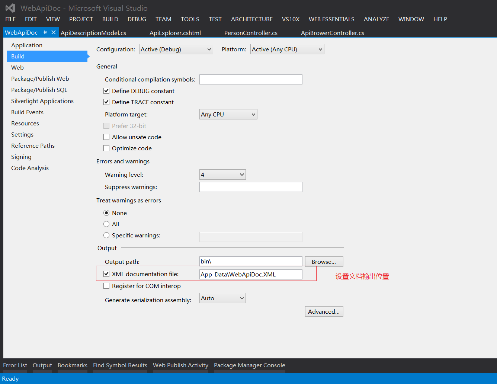
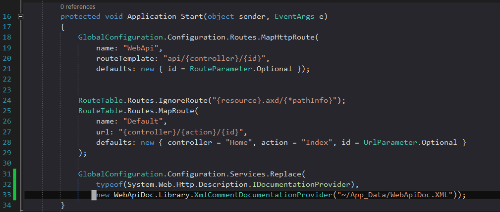
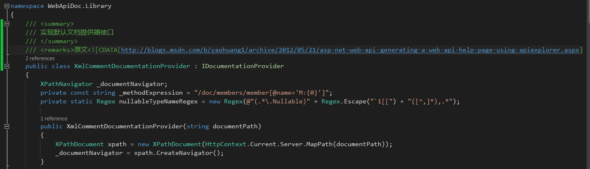
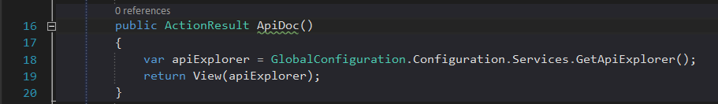
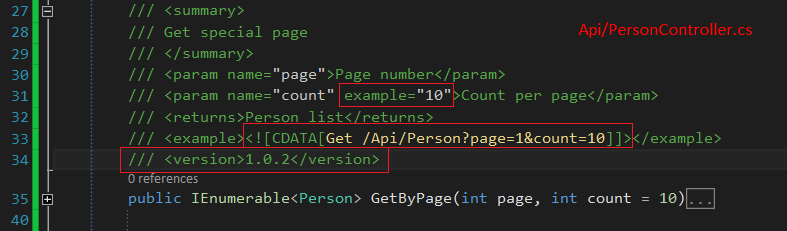
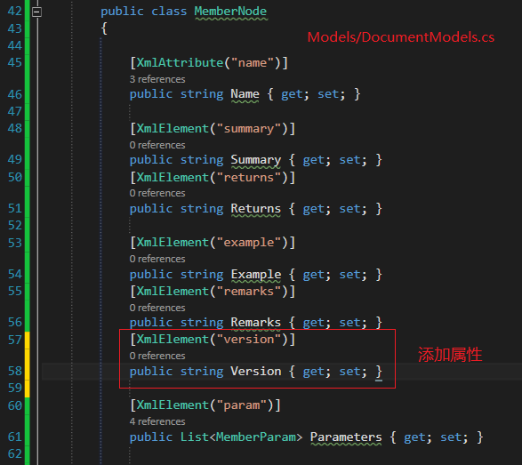
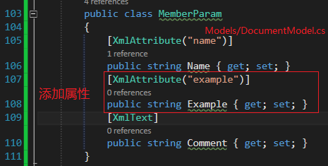
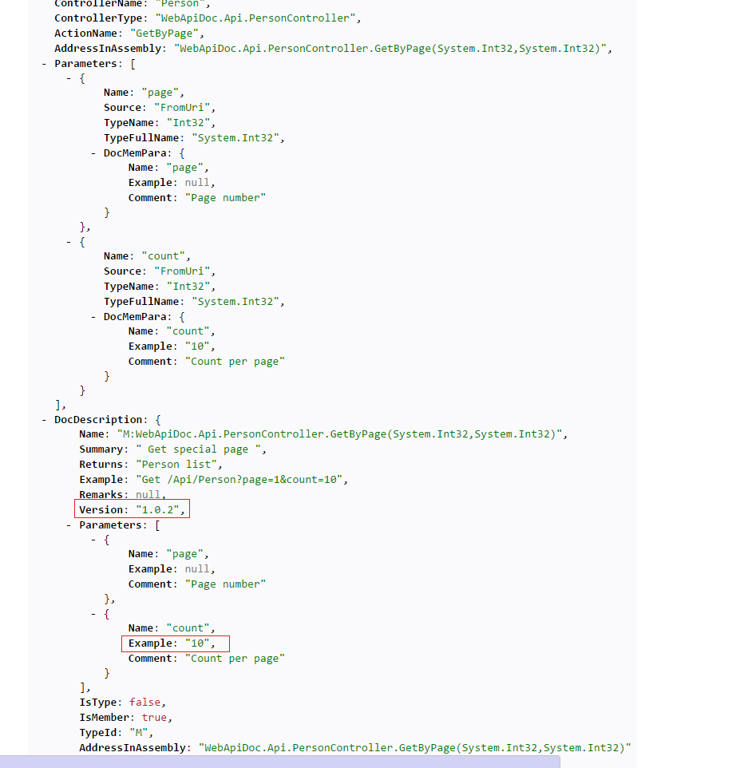

Welcome to Asp.Net Web API AutoGenerate.
这个项目是用来自动生成Web API接口文档的。项目里面包含了两种方式， 第一种是采用Yao的描述实现的。 第二种是我自己的实现，获取所有的接口信息和文档信息，然后进行信息合并实现的。(两者没有依赖关系) 两者都需要提前设置好文档输出路径: 
Yao的实现
主要通过修改程序默认IDocumentationProvider来实现的。好像不可以扩展自己的标签注释。
Step 1:替换程序默认的实现.
Step 2: 实现IDocumentationProvider.
Step 3: 示例. 
我的实现(截图里包含了自定义注释节点)
Step 1: 添加代码注释. 
Step 2: 添加对应的属性.
 
Step 3: 调用代码. 
Step 4: 输出结果. 
Tip
1. 当注释代码中有特殊字符(和XML标签冲突)，需要使用标签。如 Api/PersonController.cs截图的第33行代码。
2. 可以随意扩展注释标签，VS会自动将所有的 /// 开头符合规范的内容写入到Documentation里。如果需要这部分数据，你需要到DocumentModel.cs实体类添加相应的属性